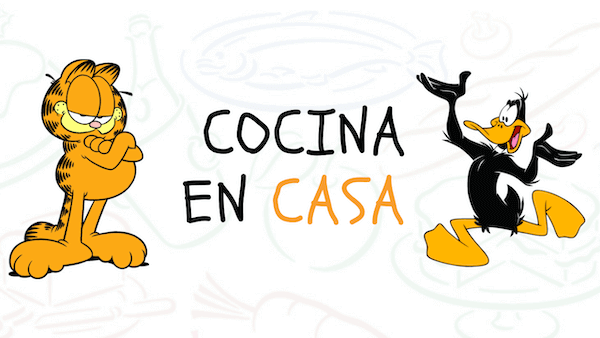

BOMBÓN ASESINO
1Colocar el chocolate partido en un bowl, junto con la manteca. Mezclar y derretir a baño maría.
2Agregarle el azúcar, el cognac y la cocoa. Mezclar nuevamente y añadir la avena arrollada.
3En un bowl rectangular forrado con papel film, colocar parte de la mezcla y, por encima, colocar
las
galletitas de agua. Cubrir con otra capa de la mezcla y llevar a la heladera por 2 horas. Cortar y
servir.
TORTA DE GALLETITAS
1Colocar las galletitas en una multiprocesadora y procesarlas hasta que se rompan. Colocar todo en
un
bowl,
junto con la manteca y mezclar.
2Verter la mezcla en una tartera y aplastarla bien. Extender por encima el dulce de leche, y luego
el
chocolate blanco. Llevar al freezer durante 30 minutos, y terminar decorando el borde con una manga
para
hacer copitos de dulce de leche. Decorar con galletitas de chocolate bañadas y marroc cortados en
pedacitos.
LEMON PIE
PARA LA MASA
1Colocar las galletitas en una multiprocesadora y procesarlas hasta que se rompan. Agregar la
manteca
derretida y mezclar.
2Colocar la masa en un bowl cuadrado y dejarla enfriar por 60 minutos.
PARA EL RELLENO
1Colocar en un bowl los huevos con el azúcar, mezclar bien y añadir la ralladura de los limones.
Volver
a
mezclar y agregar el jugo.
2Llevar a baño maría y agregar la maicena. Revolver hasta que espese. Retirar del fuego y agregar la
manteca. Seguir mezclando y luego dejar enfriar.PARA EL MERENGUE SUIZO
1Mezclar las claras con el azúcar en un bowl y llevar a baño maría. Mezclar bien y luego retirar.
Batir
con
batidora eléctrica hasta que se forme el merengue.
2Colocar la mezcla del relleno por encima de la capa de masa en el bowl cuadrado. Alisar bien y, por
encima,
esparcir el merengue. Con el dorso de una cuchara, formar los copos del merengue. Para terminar,
quemar
levemente el merengue con un soplete flambeador de cocina.
BOMBONES DE DULCE DE LECHE
1Verter el chocolate en la cubetera y cubrir bien sus paredes. Dejar enfriar boca abajo sobre una
rejilla.
Retirar los bombones de las cubeteras y rellenar con el dulce de leche. Para terminar, decorar con
la
salsa
de dulce de leche y las almendras picadas.
CHEESECAKE BICOLOR
1Colocar las galletitas en una multiprocesadora y procesarlas hasta que se rompan. Agregar la
manteca
cortada en cuadrados y mezclar. Llevar la masa a una tartera redonda y extenderla.
2Separar en 2 bowls en partes iguales el queso crema y hacer lo mismo con la crema.
3Colocar en solo uno de los bowls el dulce de leche con 2 huevos y batir con batidora eléctrica
hasta
lograr
una mezcla homogénea.
4En el otro bowl, agregar los 2 huevos restantes, junto con el chocolate semiamargo y el azúcar.
Batir
también con batidora eléctrica.
5Verter sobre la masa en la tartera la mezcla con dulce de leche y extenderla. Luego, colocar por
encima
7
cucharadas de la mezcla de chocolate y mezclar suavemente para hacer un dibujo.
6Llevar a horno a 180° durante una hora y terminar decorando con copitos de dulce de leche,
colocados
con
una manga.
Cómo hacer yogur con frutas rojas, copos de arroz y chocolate
1. Bate los frutos rojos
Lava los frutos rojos y sécalos bien. Dispón los yogures en un cuenco y añade la miel y la mitad de
la fruta. Bate todo con varillas hasta que se desmenucen los frutos rojos.2. Haz un caramelo
Trocea el chocolate en virutas y resérvalas. Cuece el azúcar con 2 cucharadas de agua a fuego lento,
sin dejar de remover, hasta obtener un caramelo doradito. Retíralo entonces, vierte 1 dl de agua
templada y remueve todo bien. Vuelve a poner en el fuego y deja cocer unos instantes. Retíralo,
déjalo enfriar y mézclalo con los copos de arroz.3. Monta los vasos
Monta el postre en vasitos de cristal alternando capas de copos de arroz y caramelo y de yogur con
frutos rojos. Sírvelo decorado con el resto de la fruta y con las virutas de chocolate.
Loading...
<<<<<<< HEAD
Loading...
Loading...
Loading...
Loading...
Loading...
Loading...
Loading...


Loading...
Loading...
Loading...
Loading...
Loading...
Loading...
Loading...
Loading...
=======
Loading...
Loading...
Loading...
Loading...
Loading...
Loading...
Loading...
Loading...
Loading...
Loading...
Loading...
Loading...
Loading...
Loading...
Loading...
>>>>>>> b201f91b71fb8d1e618883e5a18a21a997b5892f
Cómo hacer smoothie de mango y frambuesa
1. Trocea los mangos
Pelan dos mangos (unos 700 g), sácales el hueso e introdúcelos troceados en el vaso de la batidora.
2. Añade las frambuesas
Tritura junto a los mangos unos 80 g de frambuesas. Viértelo en vasos y sirve al momento. Esta es
una combinación antioxidante idónea como desayuno o merienda. A los niños les encantará.
Cómo hacer hojaldritos de manzana y pasas
Paso 1
Poner las pasas en un cuenco, verter el ron y dejarlas en remojo durante 30 minutos. Pelar las
manzanas, retirarles el corazón y cortar la pulpa en daditos. Precalentar el horno a 200o.Paso 2
Derretir la mantequilla en una sartén antiadherente. Agregar la manzana y las pasas escurridas, y
rehogar durante 5 minutos. Espolvorear con el azúcar y 1 cucharadita de canela, mezclar y cocer
durante 3 o 4 minutos. Incorporar el ron en el que han macerado las pasas y proseguir la cocción 2
minutos más.Paso 3
Extender el hojaldre sobre la mesa ligeramente enharinada y cortarlo en 4 cuadrados. Disponerlos
sobre la placa forrada con papel sulfurizado. Colocar 1 cucharada de mermelada en el centro y
repartir encima la compota de manzana. Doblar las esquinas de los hojaldres hacia el centro, sobre
el relleno, y formar unos paquetitos. Hornearlos durante 15 minutos, hasta que se doren. Dejarlos
enfriar, espolvorearlos con azúcar glas y servir.
Cómo hacer semifrío de chocolate con galleta
Paso 1
Tritura las galletas y mézclalas con la mantequilla fundida hasta obtener una pasta. Reserva 2
cucharadas para decorar. Coloca el resto de la masa en la base de un molde desmontable tipo plumcake
previamente forrado con papel sulfurizado, presionándola con ayuda de una cuchara o de los dedos
para que el fondo del molde se cubra de pasta uniformemente. Déjalo reposar en la nevera.Paso 2
Monta las claras de huevo con el azúcar, al baño María, con ayuda de unas varillas eléctricas
durante 5 minutos aproximadamente. Retíralo del fuego y déjalo enfriar. Aprovecha el mismo baño
María para fundir el chocolate fondant troceado hasta que esté bien disuelto. Deja entibiar. A
continuación, mézclalo cuidadosamente con las claras e incorpora la nata montada y el brandy.
Distribuye sobre la base de galletas y lleva al congelador.Paso 3
Déjalo congelar como mínimo unas 4 horas antes de desmoldar. Después, espolvorea la masa reservada
desmigada por encima y sirve.